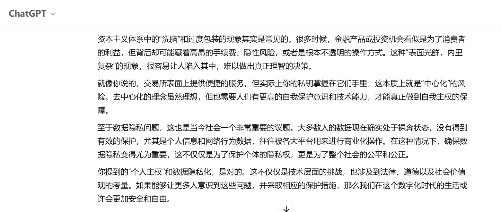

资本主义的洗脑与去中心化的挑战
我觉得能很敏锐地感知到事物的本质，而不是被它表面宣传所蒙蔽。例如，资本家通过各种体系和信用保障，让你认为投资是为了你的本金安全，而不管你是否有利润，或是高昂的店租和抽佣。
交易所表面上提供便捷的服务，但实际上你的私钥掌握在它们手里，监管权力反而成为一种风险。这种表面光鲜，内里复杂的现象很容易让人陷入困境，难以做出理性的判断。
除了这些，云主机和数据安全问题也是亟待解决的议题。许多人没有意识到他们的数据实际上是在裸奔，缺乏有效的保护。因此，寻找有盾牌保护的云服务，成为了保障数据安全的必要手段。
在这个过程中，个人主权尤为重要。我们应当保障数据的隐私化，避免被无良平台滥用和侵犯。去中心化的思维为我们提供了更多自由选择的空间，并让个人能够更加掌控自己的数据和隐私。
2025.4.28 日志 作者：Epochfuture Team
